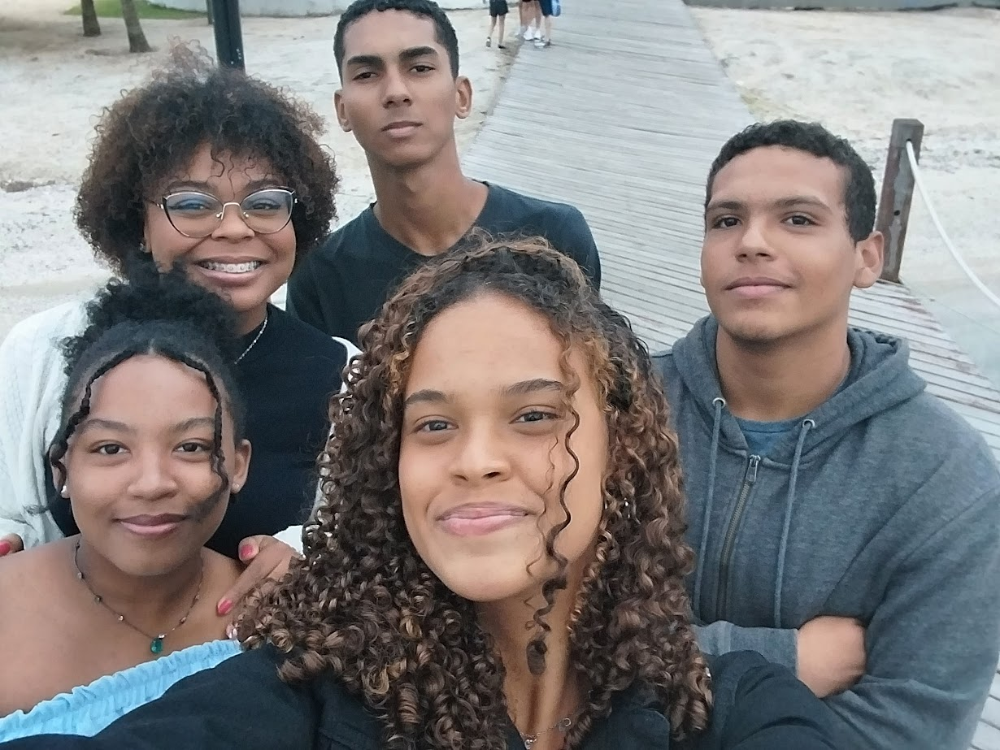
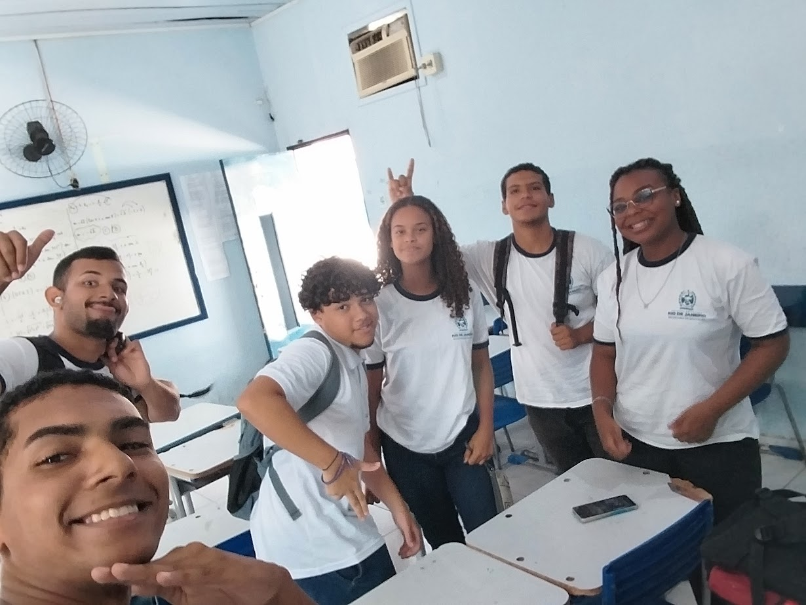

No ano de 2023, durante a terceira série do ensino médio, um grupo improvável de amigos surgiu de maneira completamente aleatória. Eram pessoas de personalidades totalmente diferentes, mas que, por algum motivo, se encaixaram perfeitamente. O grupo foi criado com a intenção de manter o contato, marcar encontros, sair juntos, ir à praia, jogar, assistir a filmes e colecionar momentos inesquecíveis.
O primeiro a entrar na turma foi Mateus Silva, o amigão da galera, sempre entrosado e muito engraçado. Depois veio Driei, o atleta carismático, com um humor contagiante. Em seguida, Mateus Machado se juntou ao grupo, trazendo suas histórias e sua personalidade forte. Logo depois, David, vulgo Jáco, chegou com suas ideias malucas e sua paixão por aventuras aleatórias.
O time cresceu ainda mais com a chegada de Natália, que amava esportes e se aventurar, e Ian, o gordinho mais gente boa e uma verdadeira comédia ambulante. Vitória veio em seguida, com seu jeito extrovertido, sua paixão por cantar, tirar fotos e apreciar a natureza. Por último, mas não menos importante, Taislayne entrou para o grupo, sendo a mais reservada, de poucas palavras, mas com um jeito único que completava a turma.
Juntos, viveram momentos incríveis e criaram lembranças inesquecíveis. A primeira grande memória veio de um evento astronômico que prometia ser épico: um eclipse lunar. Mas, para a frustração e diversão do grupo, o mau tempo impediu que eles pudessem presenciar o fenômeno. Mesmo assim, a noite foi marcada por risadas, conversas e a certeza de que estavam construindo uma amizade verdadeira.
Com o tempo, novas histórias foram se acumulando. Dias na praia, madrugadas jogando, filmes assistidos juntos, loucuras inesperadas e aventuras planejadas (ou nem tanto). Cada um, com sua personalidade única, trouxe algo especial para o grupo, tornando-o inesquecível.
Mas, como dizem, nem tudo dura para sempre. Apesar da alegria e dos momentos excelentes que compartilharam, o grupo mais admirado por todos acabou chegando ao fim. Algumas divergências e desentendimentos foram surgindo ao longo do tempo, e, pouco a pouco, os laços que antes pareciam inquebráveis começaram a se desfazer. Cada um seguiu seu caminho, trilhando novas histórias, fazendo novas amizades e encarando novos desafios.
Porém, independentemente da separação, as lembranças dos bons momentos continuam vivas na memória de cada um. E, no fundo, todos ainda esperam pelo dia em que poderão se reunir novamente para relembrar os velhos tempos, rir das antigas histórias e reviver, nem que seja por um instante, aquela amizade que um dia foi tão especial.